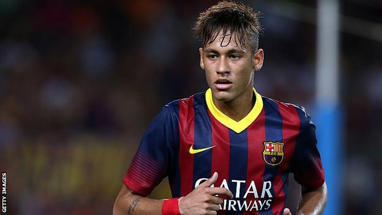

by Rohan Shrestha
Bio-Graphy of Neymar jr
Neymar Jr. (full name Neymar da Silva Santos Júnior) is a Brazilian professional footballer born on February 5, 1992, in Mogi das Cruzes, São Paulo, Brazil. He is widely regarded as one of the best players in the world and is known for his exceptional dribbling skills, creativity, and scoring ability.
Neymar began his football career at a very young age and was soon scouted by Santos FC, a Brazilian football club, where he joined their youth academy at the age of 11. He made his professional debut for Santos in 2009, at the age of 17, and quickly rose to prominence with his outstanding performances.
In 2013, Neymar signed a five-year contract with Spanish giants FC Barcelona for a transfer fee of €57.1 million. He formed a deadly attacking trio with Lionel Messi and Luis Suárez, leading the team to win numerous titles, including two La Liga titles, three Copa del Rey titles, and the UEFA Champions League in 2015.
In 2017, Neymar joined French club Paris Saint-Germain (PSG) for a world-record transfer fee of €222 million, which still stands as the highest transfer fee ever paid for a player. He has since won numerous titles with PSG, including three Ligue 1 titles, two Coupe de France titles, and one Coupe de la Ligue title.
Neymar has also enjoyed a successful international career with the Brazilian national team, having won the FIFA Confederations Cup in 2013 and the Copa América in 2019. He has scored over 70 goals in more than 100 appearances for Brazil, making him one of the country's all-time top scorers.
Off the field, Neymar is known for his flamboyant personality and is considered one of the most marketable athletes in the world. He has numerous endorsements with companies such as Nike, Beats by Dre, and Red Bull, among others. Neymar is also known for his philanthropic work, particularly in his hometown of Praia Grande, where he has set up a charity foundation to help underprivileged children.